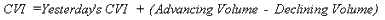

Cumulative Volume Index
Overview
The Cumulative Volume Index ("CVI") is a market momentum indicator that shows whether money is flowing into or out of the stock market. It is calculated by subtracting the volume of declining stocks from the volume of advancing stocks, and then adding this value to a running total. See Advancing, declining, and unchanged volume.
Interpretation
The CVI and OBV (On Balance Volume) are quite similar. Many computer programs and investors incorrectly call the OBV the CVI. OBV, like the CVI, was designed to show if volume is flowing into or out of the market. But, because up-volume and down-volume are not available for individual stocks, OBV assumes that all volume is up-volume when the stock closes higher and that all volume is down-volume when the stock closes lower. The CVI does not have to make this large assumption, because it can use the actual up- and down-volume for the New York Stock Exchange.
One useful method of interpreting the CVI is to look at its overall trend. The CVI shows whether there has been more up-volume or down-volume and how long the current volume trend has been in place. Also, look for divergences that develop between the CVI and a market index. For example, is the market index making a new high while the CVI fails to reach new highs? If so, it is probable that the market will correct to confirm the underlying story told by the CVI.
For additional information on interpreting the CVI, refer to the discussion on OBV.
Example
I wrote the following discussion on the CVI in a software manual in July, 18, 1984.
"The trendline on the chart below shows that up-volume exceeded down-volume (on average) for all of 1983. When this rising trend was broken (in February of 1984), the market's weakness was confirmed.
Since breaking down through its rising trendline, the CVI has begun to trend upward (and sideways) once again. While the market has been down, up-volume has exceeded or equaled down-volume (the CVI is trending upward again). There are two different ways to interpret this: Some investors feel that because the market has failed to go up (even though up-volume has exceeded, or at least kept pace with, down-volume) that the overhead supply is too great. After all, if the market falls when there is more up-volume than down-volume, what is going to happen when there is more down-volume than up-volume? An opposing school of thought is that the CVI shows what the smart money is doing. Therefore, since money is flowing into the market on the up-side, the NYSE should soon correct the divergence and rise too."

Now that I have the advantage of retrospect, we can see that the CVI was in fact showing "what the smart money" was doing. Shortly after the above commentary was written, the market broke, corrected the divergence, and rose sharply.
Calculation
The Cumulative Volume Index is calculated by subtracting the volume of declining stocks from the volume of advancing stocks, and then adding this value to a cumulative total.

Table 6 shows the calculation of the CVI.
| Table 6 | ||||
| Date | Advancing | Declining | A-D | CVI |
| 02/15/94 | 175 | 87 | 88 | 88 |
| 02/16/94 | 132 | 129 | 3 | 91 |
| 02/17/94 | 122 | 183 | -61 | 30 |
| 02/18/94 | 79 | 171 | -92 | -62 |
| 02/22/94 | 160 | 80 | 80 | 18 |
Because the CVI always starts at zero, the numeric value of the CVI is of little importance. What is important is the slope and pattern of the CVI.